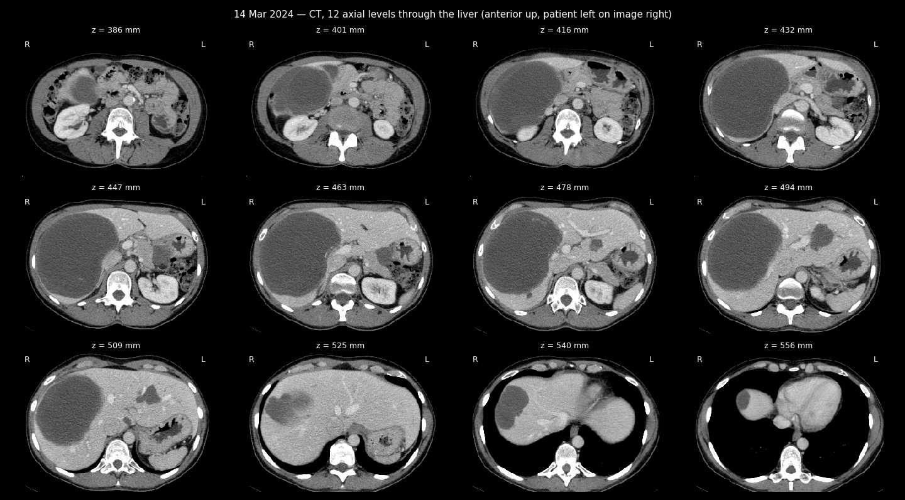
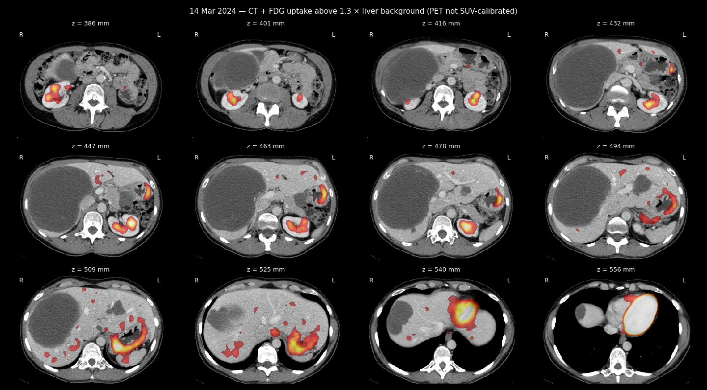

PET-CT revision — second medical opinion
PET-CT of 14 Mar 2024 — images from the study


PET-CT examination with contrast enhancement FDG
Second medical opinion
Transcription date: 25/03/2024
Patient name: Zherlitsyna Anastasia
Date of birth: 25/04/1976
Reason for referral: observation and treatment of metastatic disease such as GIST.
Study date: 14/03/2024
Methodology: the study was performed after intravenous injection of contrast, without oral administration of the contrast agent.
Comparison with previous studies: 17/08/2023
Description of observations:
Head and neck:
Assessment of brain parenchyma in this study is known to be limited. As far as one can judge, no visible pathologies.
No signs of hypermetabolic lymphadenopathy in the neck.
Thyroid gland: size within normal limits, without pathological accumulation of contrast.
Thorax:
Already known small nodules in the lungs on both sides are identified - no changes,
are beyond the resolution of PET.
No pleural effusions.
Minimal pericardial effusion is determined - no changes.
Without pathological accumulation of contrast in the lymph nodes of the mediastinum and the hilum of the lungs.
Without pathological accumulation of contrast in the parenchyma of the mammary glands.
Without pathological accumulation of contrast in the axillary lymph nodes.
A Port-A-Cath venous catheter is observed in the right axilla, its edge in the SVC.
Abdomen and pelvis:
Liver: already known hypodense formations are determined in both lobes of the liver - without significant changes, without pathological accumulation of contrast. For example, only a slight peripheral accumulation of contrast is detected at the base of a large formation (15 cm in the lateral projection). The size of the formation with lobular edges in the left lobe decreased from 5.8 to 4.8 cm.
Gallbladder: not enlarged. The intrahepatic bile ducts are dilated. The portal vein is patent.
The size of the known gastric wall mass has decreased slightly, at a height where previously it was 4.5 x 3.2 cm, this time - 4.0 x 2.8 cm. Only a slight accumulation of contrast.
Spleen: size within normal limits, without pathological accumulation of contrast. There was no pathological accumulation of contrast in the pancreatic parenchyma.
Right adrenal gland: displaced by the liver, without formations, without pathological accumulation of contrast.
Left adrenal gland: thickened, without pathological accumulation of contrast, no changes. Kidneys: no hydronephrosis or calcified stones.
No evidence of hypermetabolic lymphadenopathy in the abdomen, retroperitoneum, or pelvis.
Without pathological accumulation of contrast in the inguinal lymph nodes.
Bladder: no pathologies.
Intestinal loops: without pathologies, as far as one can judge.
Uterus: the size of known heterogeneous formations has decreased. The formation, located more cranially, decreased from 9.5 to 6.5 cm in the lateral projection. The lesion located more caudally shrank to a lesser extent - from 5 x 5.5 cm to 4.8 x 5.1 cm.
The size of the additional formation in the pelvic area on the right decreased from 5.1 x 6 cm to 5.3 x 4.8 cm. It is hypodense relative to other formations and has a clear boundary.
Bone tissue:
Without focal accumulation of contrast or destructive processes in the scanning area.
Conclusion:
The formation adjacent to the wall of the stomach and liver formations - without significant changes (some of them have only slightly decreased in size) - are not hypermetabolic.
A reduction in the size of known uterine formations was detected, as described above.
The condition of the pulmonary nodules is stable.
Sincerely,
Dr. Kulikov Victoria
Nuclear Medicine Specialist License No: 84847
Specialist license no.: 131252